오늘의 arXiv Top 15
2026-11-23 (월) · cs.CV / cs.LG / cs.RO / cs.CL / cs.AI New submissions 전수 평가
442
신규 논문
132
cs.CV
96
cs.LG
69
cs.RO
58
cs.CL
87
cs.AI
15
정밀 리뷰
분야별 필터
전체 15개 논문 표시 중
1
78점
Beyond Linear Decodability: Understanding and Improving Instruction Following in World Action Models
VLA
relevance 9/10
Artificial Intelligence (cs.AI)
world action model이 말로 지정한 물체를 무시하고 학습 때 익힌 물체로 가는 문제를, 중간 표현에서 지시 대상을 선형으로 읽어 내게 하는 보조 loss로 줄임. LIBERO-CF 평균 성공률이 InternW0-Δ 기준 23.5%에서 74.6%로 오름.
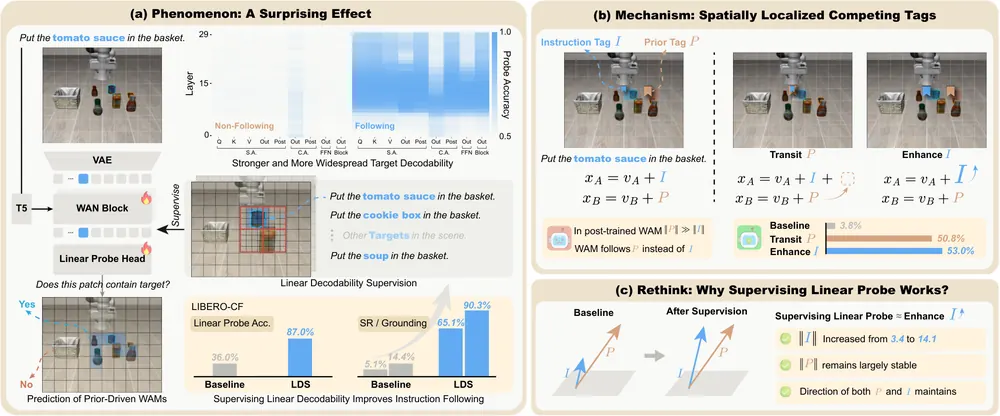
무슨 문제인가
world action model(WAM: 영상 생성 모델 위에서 미래 영상과 action을 함께 생성하는 robot policy)은 조작은 잘하지만, 같은 장면에서 다른 지시를 주면 학습 때의 행동을 되풀이함. 앞선 연구는 이런 모델 내부에도 지시 대상 정보가 들어 있지만 행동을 바꾸지는 못한다고 보고했음(encoded but not in control). 이 해석이 맞다면 표현을 고쳐도 소용이 없고, 다른 지시마다 새 demonstration을 모아야 함. 공개 dataset은 원래 장면을 다시 만들 수 없는 경우가 많아 이 방법은 쓰기 어려움.
어떻게 푸나
저자들은 먼저 같은 장면에 지시만 다른 demonstration(counterfactual demonstration)으로 fine-tuning한 지시 따르는 모델과 원래 모델을 비교함. 두 모델 모두 지시 대상 정보를 담고 있었지만, linear probe로 읽은 정확도는 원래 모델 51.5%, 지시 따르는 모델 77.5%로 차이가 났음. 이를 근거로 LDS(Linear Decodability Supervision)를 만듦. LDS는 Wan 기반 DiT의 9, 19, 29번째 block 출력에 공유 linear head를 붙임. head는 첫 denoising step의 visual token마다 4×4 격자로 지시 대상, 다른 후보 물체, 배경을 가려 냄. 이 loss를 원래 flow-matching loss에 0.25 가중치로 더함. 추가 데이터는 기존 관측에 다른 지시와 대상 mask만 짝지은 것이고 action이나 미래 영상은 없음. head는 추론 때 떼어 냄. 저자들은 결과를 설명하려고 표현 안에 학습 습관 쪽 신호(prior tag P)와 지시 쪽 신호(instruction tag I)가 더해져 경쟁한다는 가설을 세움.
결과
- LIBERO-CF(LIBERO 장면에 다른 실행 가능한 목표를 지시해 학습 과제를 되풀이하는지 보는 benchmark) 평균 지시 성공률이 InternW0-Δ에서 23.5%에서 74.6%로, OpenWAM에서 5.1%에서 65.1%로 오름. 가장 강한 VLA baseline(π0.5 + SAM)의 47.8%보다 26.8퍼센트포인트 높음. 원래 LIBERO 40개 과제 성공률은 96.0%에서 96.8%로 유지됨.
- 학습 없이 OpenWAM 8번째 block 표현만 고친 실험도 가설을 뒷받침함. LIBERO-CF 물체 집기 subset에서 성공률이 3.8%에서 I를 32배 더하면 53.0%로, P 방향을 지시 대상으로 옮기면 50.8%로 오름. 이 편집은 정답 mask를 써서 넣은 진단용임.
- RoboTwin-IF(저자들이 만든 양팔 조작 benchmark, 같은 첫 관측에 지시만 다름)에서 trajectory가 없는 지시의 평균 성공률이 OpenWAM 7.6%에서 54.4%로 오름. 다른 WAM인 LingBot-VA는 LDS를 적용해도 놓기 과제 성공률이 14.4%에서 13.2%로 내려감.
- 실제 AgileX 양팔 로봇에서 빨간 버튼 누르기만 학습시키고 초록·파란 버튼을 지시함. OpenWAM, LingBot-VA, InternW0-Δ 세 WAM 모두 LDS 후 10회 중 10회 성공함. LDS 전에는 0%, 0%, 40%였음.
한계
표현 분석과 학습 없는 편집은 OpenWAM LIBERO checkpoint 하나, 두 후보 장면 132개, 장면당 rollout 1회로 한 것임. prior 신호와 연관된 성분(U)에는 prior 신호와 물체 외형 차이가 섞여 있어 둘을 따로 떼어 내지 못함. 처음 보는 장면에서는 성공률이 LIBERO-CF 67.7%, LangGap(지시 일반화 benchmark) 45.8%로 내려감. 실로봇은 과제 2개, 과제당 10회뿐이고 Wan 기반 WAM에만 해당한다고 저자가 밝힘. RoboTwin-IF는 아직 공개되지 않았음.
누리랩 연구와의 연결
- 지시를 무시하는 실패를 내부 표현의 두 성분 경쟁으로 진단하고, 표현 편집으로 원인을 확인하는 절차를 보여 줌. failure detection·diagnosis 연구에서 실패 원인을 표현 수준에서 찾는 방법으로 가져다 쓸 수 있음.
- action label 없이 대상 mask만으로 VLA/WAM의 grounding을 고침. 같은 장면에서 지시만 바꾼 counterfactual 평가와 학습 없는 표현 편집은 test-time steering 연구와 바로 이어짐.
2
78점
LoCo-WAM: Test-Time Training as Long Context for World-Action Models
World Model
relevance 9/10
Robotics (cs.RO)
world-action model이 실행 중에 방금 관측한 frame으로 video 예측 부분을 조금씩 학습하게 해서, 짧은 history만 보는 모델이 긴 history 모델만큼 행동하게 함. RoboCasa GR-1에서 2.4초 history 모델의 성공률이 67.9%에서 73.6%로 올라 9.6초 history 모델(73.5%)과 같아짐.
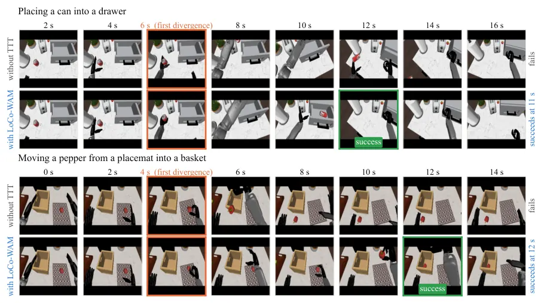
무슨 문제인가
world-action model은 다음 장면을 영상으로 예측하고 그 예측을 보고 행동을 고르는 robot policy임. 대부분 짧은 관측 history만 입력으로 받으므로, 이미 끝낸 단계처럼 화면에서 사라진 정보는 행동에 반영하지 못함. history를 늘리면 결정마다 처리할 token이 늘고, history 길이마다 모델을 따로 학습해야 하는 경우도 있음. history를 골라 쓰거나 압축하는 방법은 그 module을 policy와 함께 학습해야 함.
어떻게 푸나
LoCo-WAM(Long Context World-Action Model)은 모델 구조와 history 길이는 그대로 두고, 실행 중에 test-time training을 함. test-time training은 정답 label 없이 self-supervised loss로 test 입력마다 모델을 갱신하는 방법임. 대상 모델은 다음 frame의 latent를 예측하는 video expert와, history와 이 예측을 보고 action chunk를 만드는 action expert로 나뉨. 결정마다 이미 관측이 끝난 가장 최근 구간을 골라, 그 앞 history로 그 구간의 frame을 예측하도록 video expert에 붙인 LoRA(low-rank adapter)를 gradient 한 step 갱신함. loss는 사전학습 때 쓴 video flow matching loss를 그대로 씀. 갱신된 video expert는 상상한 미래와 action expert가 읽는 feature를 모두 바꾸고, action expert 자체는 고정함. adapter는 episode 안에서 누적되고 episode가 시작할 때마다 0으로 되돌림. 그래서 입력 창을 벗어난 과거 관측도 adapter 가중치를 통해 행동에 영향을 줌.
결과
- RoboCasa GR-1(GR-1 humanoid의 탁상 조작 과제 24개)에서 긴 history용으로 나온 기존 world-action model인 Long-WAM에 적용해 성공률을 잼. 4.8초 history 모델은 71.1%에서 78.3%로 올라, 따로 학습한 9.6초 history 모델(73.5%)보다 4.8퍼센트포인트 높음. 결정당 지연은 9.6초 모델 0.67초 대비 0.77초이고, 비동기 갱신을 쓰면 0.64초임.
- 같은 2.4초 history 조건에서 다른 test-time 방법과 비교함. LoCo-WAM은 5.7퍼센트포인트를 올리고, 여러 episode에 걸쳐 world model을 적응시키는 AdaWorldPolicy는 2.5, fast-weight layer를 meta-training하는 RoboTTT는 3.8퍼센트포인트를 올림. RoboTTT는 약 136 GPU-hour의 meta-training이 필요함.
- LIBERO-Mem(같은 물체를 반복 조작해서 현재 화면만으로는 진행 단계를 알 수 없는 Franka 과제 10개)에서 LingBot-VA로 잼. 8-chunk history 모델 성공률이 27.5%에서 32.2%로 올라 기본 30-chunk history 모델(32.2%)과 같아짐.
- 관측 frame 대신 모델 자신의 예측을 학습 target으로 쓰면 성공률이 70.8%로 base model(71.1%) 수준에 머묾. 갱신을 4번째 결정 뒤에 멈추면 72.9%로 내려가므로, 성능 향상은 episode 내내 실제 관측으로 학습하는 데서 나옴.
한계
실험은 시뮬레이션 benchmark 4개뿐이고 실로봇 결과는 없음. RoboCasa365와 RoboTwin 2.0(양팔 조작 과제 50개 중 가장 어려운 8개)에서는 향상이 0.8에서 1.4퍼센트포인트로 작고, 표준편차와 비슷한 크기임. learning rate를 3분의 1로 줄이면 72.8%로 내려가는 등 benchmark마다 learning rate를 따로 골라야 하며, 본문에 코드 공개 주소는 없음.
누리랩 연구와의 연결
- 실제 관측과 예측의 차이로 실행 중에 world model을 고치는 방식이라, 누리랩의 test-time optimization과 robot memory 연구에서 바로 비교 대상이 됨. adapter 가중치를 episode memory로 쓰는 구조는 history 압축 방식과 대조 실험을 짜기 좋음.
- 결정마다 계산하는 video loss 감소량은 예측이 실제와 어긋나는 정도를 나타냄. 이 값을 failure detection 신호로 쓸 수 있는지 시험해 볼 만함.
3
74점
Tripwire: Robot Agents that Program Their Own Interrupts under Human Disturbance
Embodied AI
relevance 9/10
Robotics (cs.RO)
agent가 VLA를 호출할 때마다 실행 중 상황을 감시하는 작은 Python 프로그램(tripwire)을 직접 써서 붙이고, 조건이 맞으면 policy를 즉시 멈추고 agent를 깨우게 함. 사람이 방해하는 시뮬레이션 주방에서 같은 agent를 쓴 turn 단위 방식 대비 사람과 닿지 않은 episode 비율이 61.3%에서 81.3%로 오름.
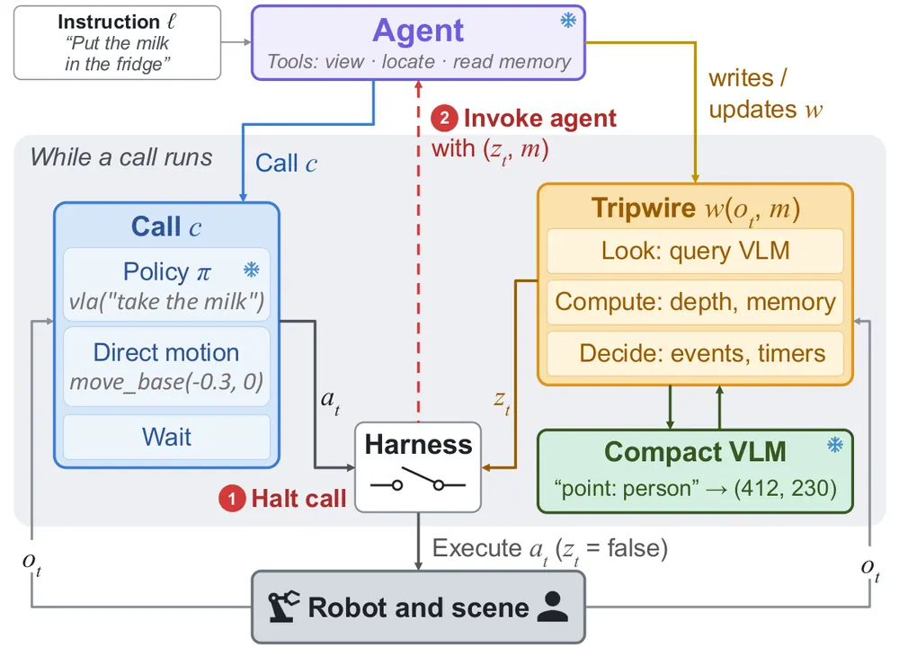
무슨 문제인가
VLM agent가 사전학습된 VLA를 tool로 부르는 기존 harness는 turn 단위로 동작함. agent는 policy 호출이 끝나야 다시 판단할 수 있으므로, 호출 도중 사람이 길을 막거나 잡으려던 물체를 옮겨도 알지 못함. agent를 더 자주 부르면 이 공백은 줄지만, 판단 한 번에 몇 초가 걸리고 대부분의 control step에서는 새 판단이 필요 없음. 저자들이 RoboCasa365(가정 주방 시뮬레이션 조작 과제 모음) 과제에 반응형 사람 avatar를 넣자 가장 강한 policy의 성공률이 61.9%에서 20.8%로 내려가고, 약 절반의 episode에서 사람과 닿음.
어떻게 푸나
TRIP은 학습 없이 기존 policy를 그대로 감싸는 event 기반 harness임. agent는 매 호출마다 실행할 동작(VLA 호출, base·arm 직접 이동, 대기)과 함께 tripwire를 씀. tripwire는 RGB-D 관측과 자기 memory를 입력으로 받아, 계속 진행이면 false를, 멈춰야 하면 이유를 적은 문장을 내는 stateful Python 함수임. tripwire 안에서는 작은 VLM(Qwen3.5-9B)에 사람 위치 같은 짧은 질문을 하고, 그 답을 depth·이전 거리·timer와 엮어 사람이 다가오는지 판단함. tripwire가 발동하면 harness가 action chunk 중간이라도 policy를 멈추고, 이유와 memory를 agent에게 넘김. agent는 상황을 다시 보고 피하기·기다리기·재개 중 하나를 고르며, 그 결정에 맞게 tripwire를 새로 씀. 예를 들어 기다리기로 하면 사람이 떠나는 순간을 감시하는 tripwire로 바꿈. 평가용으로 RoboHD(RoboCasa365 과제 42개에 사람 방해 4종을 넣은 장면 168개, 사람과 닿으면 실패)도 새로 만듦.
결과
- RoboHD에서 가장 강한 policy인 Xiaomi-Robotics-1(XR)을 감쌌을 때, 사람과 닿지 않은 episode 비율(safety)이 turn 단위 agent harness의 61.3%에서 81.3%로 오름. 두 방식은 agent·tool·prompt가 같고 agent를 부르는 시점만 다름.
- 같은 조건에서 사람이 있을 때 과제 성공률은 31.0%에서 38.7%로 오르고, 사람이 없을 때는 73.8% 대 73.2%로 비슷함. 분당 agent tool 호출은 30.3회에서 19.4회로 줄어듦.
- agent가 첫 turn에 쓴 tripwire를 끝까지 고정하면 safety가 61.3%, 성공률이 33.3%로 내려감. 사람이 0.6m 안에 있으면 무조건 멈추는 고정 규칙은 safety 86.0%를 얻지만 성공률이 16.1%로 내려감.
- 실제 xArm 7에서 π0.5로 머그 걸기·수건 걸기를 시험함. 과제 2개와 방해 조건 2개(사람이 팔을 막기, 물체를 옮기기)를 합친 40회 중 TRIP은 25회 성공했고, turn 단위 harness는 5회, policy 단독은 1회 성공함.
한계
사람은 motion-capture clip을 재생하는 avatar이고 충돌 body가 없어서 접촉을 기하 계산으로 판정함. 시뮬레이션에서는 agent와 VLM이 계산하는 동안 physics를 멈추므로, 로봇 시간 1.5분에 실제로는 약 12분이 걸리고 agent 지연은 결과에 반영되지 않음. 실로봇은 단일 과제 policy 2개와 저자 본인이 방해하는 조건뿐이고, 코드 공개 주소는 본문에서 확인 불가임.
누리랩 연구와의 연결
- failure detection/recovery를 학습된 detector가 아니라 agent가 상황마다 다시 쓰는 감시 프로그램으로 푼 사례임. VLA 실행 중 실패 징후 감지와 복구 시점 결정 연구에서 비교 대상으로 쓸 수 있음.
- tripwire memory가 호출 사이에 지워지고 agent가 필요한 정보를 코드 상수로 넘기는 구조는, robot memory를 어디에 둘지 설계할 때 참고할 수 있음.
4
74점
Coherent Moment Propagation: Epistemic Uncertainty for Pre-trained Robot Policies
Failure Detection
relevance 9/10
ICLR 양식 (추정)
Robotics (cs.RO)
학습이 끝난 flow matching 로봇 policy에서 epistemic uncertainty를 재는 기존 방법이 ODE 적분 step을 늘릴수록 0으로 줄어드는 문제를 증명하고, 상태와 가중치의 공분산을 함께 넘기는 방식으로 고침. LIBERO-90 실패 예측에서 timestep-wise accuracy가 0.643으로 비교한 post-hoc 방법 중 가장 높음.
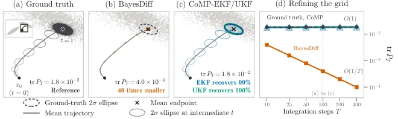
무슨 문제인가
π0.5나 SmolVLA 같은 flow matching VLA는 행동을 내놓기만 하고, 그 행동을 믿어도 되는지는 알려 주지 않음. policy를 여러 개 학습하는 ensemble은 foundation policy 규모에서 비용이 커서, 학습된 policy 하나에서 불확실성을 뽑는 방법이 필요함. BayesDiff는 마지막 layer 가중치에 Laplace 근사로 Gaussian posterior를 두고, 적분 과정에서 상태의 평균과 분산을 함께 넘기는 기존 방법임. 그런데 BayesDiff는 매 step 가중치를 따로 적분해 없애므로, 같은 가중치가 궤적 전체를 만든다는 상관을 버림.
어떻게 푸나
저자는 먼저 BayesDiff가 계산하는 전체 분산(공분산 행렬의 trace)이 Euler step 수 T에 대해 O(1/T)로 줄어듦을 증명함. velocity field가 Lipschitz이고 예측 분산이 유계라는 두 가정만 씀. CoMP(Coherent Moment Propagation)는 Euler update를 평균 궤적과 MAP 가중치 주변에서 상태와 가중치 둘 다에 대해 선형화함. 그래서 상태 평균, 상태 공분산, 상태와 가중치 사이의 교차 공분산 세 가지를 step마다 행렬 곱으로 정확히 갱신함. 이 교차 공분산을 넘기면 전체 분산의 상한이 T와 무관해짐. CoMP-EKF(extended Kalman filter 방식)는 상태 Jacobian을 autodiff로 구함. CoMP-UKF(unscented Kalman filter 방식)는 action chunk를 펼친 차원 D에 대해 2D+1개 sigma point를 Euler map에 통과시킴. 여기에 VLA backbone이 이미 계산한 이미지·언어·proprioception embedding을 마지막 layer 입력에 붙이고 그 출력 가중치를 0으로 둔 augmented head를 씀. 이렇게 하면 policy를 다시 학습하지 않고 행동도 바꾸지 않으면서 posterior가 관측 차이를 반영함. 입력은 관측과 초기 noise이고, 출력은 action chunk와 그 공분산의 trace로 만든 uncertainty score임.
결과
- robomimic(시뮬레이션 조작 과제 모음)의 Lift, Can, Square에서 posterior 표본 6000개로 만든 기준 공분산과 비교함. BayesDiff는 과제에 따라 기준 분산의 6%에서 23%만 되살림. CoMP 두 방식은 기준 분산과 0.2% 안으로 맞음.
- LIBERO-90(시뮬레이션 조작 과제 90개 모음) 중 성공률 0.3에서 0.7인 과제 9개에서 π0.5의 실패를 미리 알아내는 실험을 함. CoMP-UKF의 timestep-wise accuracy(늦은 감지에 벌점을 주는 정확도)가 0.643임. 가장 강한 baseline인 VFD(적분 경로에서 ensemble 구성원 velocity field의 불일치를 더하는 방법)는 0.635, BayesDiff는 0.533임. 감지 정확도는 0.794로 GU(Gaussian entropy 기반 uncertainty 점수)의 0.770보다 높음.
- SmolVLA를 LIBERO-10에 fine-tuning할 demonstration을 uncertainty로 고르는 실험에서 CoMP-UKF는 무작위 선택보다 평균 3.5퍼센트포인트 높은 성공률을 얻음. augmented head를 쓴 BayesDiff는 선택 점수를 매길 때 적분 step을 10에서 50으로 늘리면 이득이 2.7에서 -2.9퍼센트포인트로 내려감. CoMP-UKF는 같은 조건에서 3.3에서 3.7퍼센트포인트를 유지함.
한계
모든 실험이 시뮬레이션이고 실로봇 결과는 없으며, 코드는 게재 후 공개 예정임. 연산 비용이 크고 action chunk 차원에 따라 늘어남. CoMP-UKF는 π0.5에서 결정당 1.85초가 걸리고, chunk가 5배 큰 SmolVLA에서는 3.38초와 4.6GB가 듦. robomimic에서는 따로 학습한 ensemble 두 개가 timestep-wise accuracy 0.687로 CoMP-UKF의 0.648보다 높음. 방법은 마지막 layer가 선형이라는 가정에 기댐.
누리랩 연구와의 연결
- VLA를 다시 학습하지 않고 실패 감지용 uncertainty를 얻는 방법이라 failure detection/recovery 연구의 baseline으로 바로 쓸 수 있음. step 수에 따라 BayesDiff 계열 점수가 줄어드는 문제는 우리 실험에서 점수를 비교할 때 확인해야 할 항목임.
- 모호한 언어 지시에서 uncertainty가 오르는 augmented head 결과는, 실패 직전에 사람에게 되묻거나 active perception으로 정보를 더 모으는 시점을 정하는 신호로 쓸 수 있음.
5
74점
A Plan or an Adversarial Example? A Round-Trip Check for Latent World Models
World Model
relevance 8/10
ICLR 양식 (추정)
Machine Learning (cs.LG)
latent world model로 plan을 오래 탐색하면 model은 목표에 닿는다고 예측하지만 실제로는 실패하는 plan이 생김을 측정하고, 예측 상태에서 행동을 다시 읽어 어긋나면 벌점을 주는 round-trip check로 고침. DINO-WM의 Wall 과제에서 재계획 없는 최종 plan 성공률이 0.39에서 0.76으로 오름.
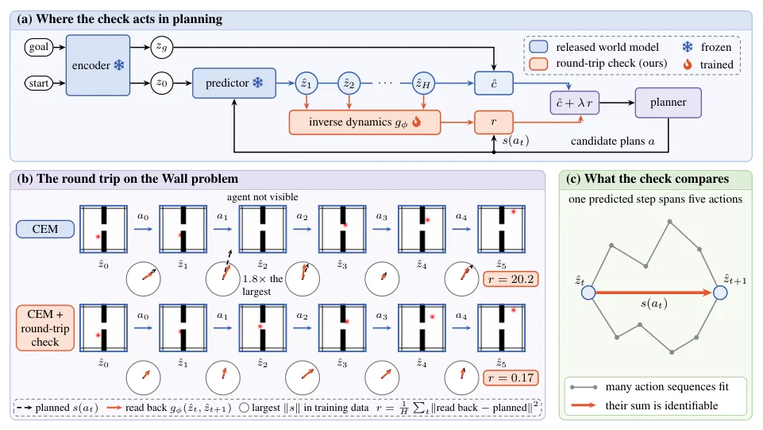
무슨 문제인가
DINO-WM, LeWM 같은 latent world model은 visual encoder의 feature 공간에서 행동열의 미래를 예측하고, CEM(cross-entropy method) 같은 planner가 예측된 미래가 목표에 가장 가까운 행동열을 찾음. 이 탐색은 classifier 점수가 오르도록 이미지를 최적화하는 것과 구조가 같아서, model 오차를 파고드는 plan이 나올 수 있음. 저자는 model이 성공을 예측하지만 실행하면 실패하는 plan을 adversarial plan이라 부름. 기존 benchmark는 재계획을 포함한 episode 성공률만 보고하므로, 한 번의 탐색이 이런 plan으로 끝나는 빈도는 드러나지 않았음.
어떻게 푸나
먼저 진단 test를 둠: planner를 한 번 돌리며 매 반복의 plan을 simulator에서 실행하고, 어떤 반복에서 풀었다가 최종 plan이 놓친 문제의 비율(adversarial rate)을 잼. 수리에는 inverse-dynamics model(IDM: 연속한 두 상태에서 그 사이 행동을 추정하는 network)을 씀. 대상 world model들은 환경 행동 5개 묶음(block)마다 latent 상태 하나를 예측하므로, 두 상태가 정하는 것은 block 안 행동들의 합뿐임. 그래서 IDM은 개별 행동 대신 block 행동 합을 예측하는 2층 MLP로 만들고, world model의 학습 데이터로 학습함. planning 중에는 후보 plan의 예측 상태 쌍마다 IDM이 읽은 합과 계획한 합의 제곱 차이를 평균해 residual r을 구함. r은 후보들 사이 표준편차의 비로 정규화해 예측 cost에 더하고, 조절할 hyperparameter는 가중치 β 하나임. world model은 다시 학습하지 않음.
결과
- world model·과제·planner 조합 13개 중 7개에서, 어떤 반복에서 풀었던 문제의 14~68%를 최종 plan이 잃음. DINO-WM Wall의 CEM 성공률은 11번째 반복의 0.56에서 30번째 반복의 0.39로 내려감. 예측 cost, OOD 점수, 행동 크기 점수 중 어느 것도 실패 plan을 가려내는 AUROC가 0.63을 넘지 못함.
- 재계획 없이 CEM 30회 반복 뒤 최종 plan을 실행한 성공률은 Wall(DINO-WM, 벽의 문을 지나 목표로 가는 2D navigation)에서 0.39에서 0.76으로 오름. Cube(LeWM, 로봇 팔로 큐브를 목표 위치로 옮기는 조작)에서는 0.64에서 0.79로 오름. 행동 하나하나를 맞추는 기존 방법 ACID의 per-action target(IDM이 개별 행동을 맞추게 함)은 같은 조건에서 0.64와 0.71임.
- JEPA-WM의 Wall에서 MPPI(sampling 기반 trajectory 최적화 planner) 성공률이 0.56에서 0.94로 오름. 재계획(MPC)을 하는 Cube에서는 CEM 성공률이 0.70에서 0.81로 오름. 추가 planning 시간은 0.2~3.1%임.
- Wall의 실패 원인은 학습 데이터의 공개된 학습 데이터의 위치 label이 frame과 맞지 않는 것이었음. label을 고쳐 fine-tuning한 model은 0.82이고, check는 label 수정 없이 0.76에 도달함.
한계
실험은 모두 시뮬레이션의 2D navigation과 단순 조작 과제이고 실로봇 결과는 없음. adversarial rate가 8% 이하인 planner 6개에서는 이득이 없고, DINO-WM PointMaze는 1.00에서 0.92로, JEPA-WM PushT는 0.67에서 0.52로 내려감. block 합 target은 행동이 block 안에서 더해지는 과제를 가정하며, 관절 torque를 쓰는 Reacher에서는 0.37에서 0.41로 이득이 작음. 재계획을 하는 Wall에서는 0.88 대 0.89로 차이가 없음.
누리랩 연구와의 연결
- 탐색을 더 할수록 실행 성공률이 내려가는 현상과 매 반복 plan을 실행해 재는 adversarial rate는, world model 기반 test-time planning 연구에서 planner를 평가하는 지표로 바로 쓸 수 있음.
- 예측 상태에서 행동을 다시 읽는 일관성 residual은 world model rollout의 failure detection 신호 후보임. 다만 저자는 r을 개별 plan 판별기로 평가하지 않았으므로 그 용도는 따로 검증해야 함.
6
74점
Skill-JEPA: Learning Planner-Aligned Action Spaces for World Models
World Model
relevance 8/10
Robotics (cs.RO)
JEPA world model이 raw action 대신 Gaussian prior를 가진 latent skill을 입력으로 받게 바꿔서, planner가 뽑는 후보가 model의 학습 분포 안에 들어오게 함. planner를 고치지 않고도 80 step 떨어진 목표의 평균 성공률이 42%에서 62%로 오름.
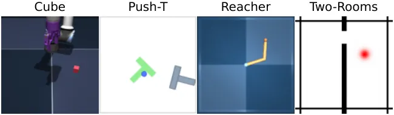
무슨 문제인가
JEPA(Joint-Embedding Predictive Architecture) world model은 이미지를 latent로 바꾸고 action을 넣었을 때 다음 latent를 예측함. 목표에 가려면 CEM 같은 sampling 기반 planner가 Gaussian에서 action 후보를 많이 뽑고 model로 결과를 예측해 가장 좋은 것을 고름. 그런데 model은 데이터에 있던 구조적이고 상태에 따라 달라지는 action만 보았으므로, Gaussian 후보에 대한 예측은 믿기 어려움. 이 예측 오차가 rollout을 따라 쌓여서, raw action 기준 성공률은 20 step 목표에서 87%이던 것이 80 step 목표에서 42%로 내림.
어떻게 푸나
Skill-JEPA는 world model에 state-conditioned VAE 하나를 더함. VAE encoder는 현재 latent 관측과 4 step 길이의 action chunk를 받아 latent code(skill)로 바꾸고, decoder는 skill과 현재 latent 관측을 받아 action chunk를 다시 만듦. skill의 prior는 모든 상태에서 같은 표준 Gaussian N(0, I)로 고정함. predictor는 action chunk 대신 skill을 입력으로 받아 4 step 뒤 latent를 예측하고, 예측 오차·action 복원 오차·KL 항·기존 collapse 방지 항을 함께 end-to-end로 학습함. 추론 때는 planner를 그대로 두고 탐색 변수만 skill로 바꾸며, 첫 후보를 N(0, I)에서 뽑음. 고른 skill 계획은 predictor가 예측한 중간 latent를 decoder에 넣어 skill 하나씩 action으로 풀어 냄. 저자는 planner 첫 후보에 대한 예측 오차가 상한을 가짐을 이론으로 보임. 그 상한은 학습 데이터에서의 예측 오차와 KL 항으로 정해지는 penalty의 합임.
결과
- 표준 과제 4개(Cube: 로봇 팔 블록 조작, Push-T: T자 블록 밀기, Reacher: 2관절 팔 제어, Two-Rooms: 방 두 개 사이 이동)와 JEPA world model 3개의 평균 성공률임. 세 model(LeWM, PLDM, SMWM)은 encoder를 end-to-end로 학습하고 collapse 방지 방식만 다름. 80 step 목표에서 raw action 42%, skill 62%로 오름. 차이는 20 step의 5퍼센트포인트에서 80 step의 20퍼센트포인트로 커지고, Reacher에서는 차이가 없음.
- OGBench-AntMaze(관절 8개 4족 로봇이 미로를 건너는 과제)에서 world model 3개 평균임. 미로 두 칸 거리 목표의 성공률이 raw action 0.4%에서 skill 38%로 오름. 세 칸은 0%에서 21%로 오름.
- LeWM에서 skill 학습의 KL 항을 뺀 deterministic autoencoder skill은 Cube에서 raw action과 비슷하고 나머지 3개 과제에서 더 낮음. 이 skill에 맞춘 Gaussian에서 planner를 시작해도 VAE skill 수준까지 오르지 않음.
- LeWM에서 planner 4개 모두 skill 쪽이 높음. 과제와 거리 평균으로 CEM 17.5, iCEM(시간 상관 noise를 쓰는 CEM 변형) 29.8, MPPI 28.1, Predictive Sampling 20.8퍼센트포인트 오름. 한 번만 뽑고 고르는 Predictive Sampling은 Two-Rooms 80 step에서 skill 94%, raw action 44%임.
한계
실험은 모두 시뮬레이션이고 실로봇 결과는 없음. 이론은 planner의 첫 후보와 한 step 예측만 다루며, Two-Rooms에서는 skill 위 iterative CEM(69%)이 한 번 sampling(94%)보다 낮아 refinement 단계는 설명하지 못함. skill 길이는 4로 고정했고 비교 대상은 raw action baseline뿐이라 subgoal·hierarchy 기반 방법과의 비교는 본문에서 확인 불가임.
누리랩 연구와의 연결
- world model 기반 test-time planning에서 실패 원인을 planner가 아니라 action 표현에서 찾은 사례임. VLA의 action chunk를 latent skill로 바꿔 world model 위에서 inference-time search를 할 때 바로 가져다 쓸 수 있는 설계임.
- planner 후보에서의 예측 오차와 데이터에서의 예측 오차를 나눠 잰 분석은, world model 예측을 failure detection 신호로 쓸 때 어디서 오차가 커지는지 확인하는 방법으로 쓸 수 있음.
7
72점
Efficient VLA Reinforcement Learning via Subchunk Rollouts in Latent World Models
VLA
relevance 9/10
ICLR 양식 (추정)
Machine Learning (cs.LG)
VLA를 world model 안에서 RL로 개선할 때 이미지를 만드는 대신 압축된 latent 공간에서 상상 rollout을 돌리고, 고정된 VLA 위에 작은 residual policy만 학습함. LIBERO-Long 성공률이 71.2%로, 4×H100에서 전체 VLA를 fine-tuning한 VLA-MBPO의 64.4%보다 높음.
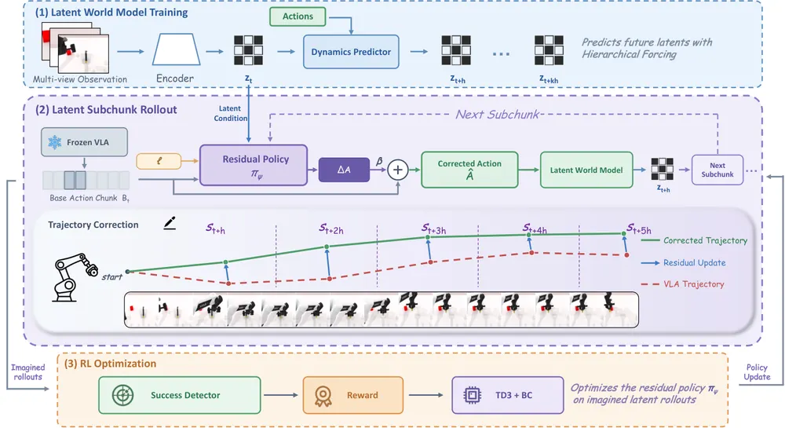
무슨 문제인가
world model로 VLA를 RL 학습시키는 기존 방법(VLA-MBPO, WMPO 등)은 미래 장면을 픽셀 단위로 생성하는 큰 video model을 쓰고, VLA 가중치 전체를 fine-tuning함. 그래서 계산과 메모리 비용이 큼. latent world model은 이미지를 만들지 않아 가볍지만 두 가지가 막힘. 첫째, 한 걸음 예측으로 학습한 모델이 자기 예측을 다시 입력으로 받으면 오차가 쌓임(compounding error). 둘째, VLA는 이미지를 입력으로 받으므로 예측된 latent를 VLA에 바로 넣을 수 없음.
어떻게 푸나
LS-MBPO(Latent Subchunk rollout for Model-Based Policy Optimization)는 세 단계로 동작함. 먼저 여러 카메라 이미지를 ViT encoder로 latent로 바꾸고, action을 조건으로 다음 latent를 예측하는 dynamics predictor를 학습함. 이때 Hierarchical Forcing을 씀: 정답 latent K개로 시작한 입력 창이 반복할수록 모델 예측으로 채워지고, 창 안의 모든 위치에 다음 latent 정답을 감독 신호로 줌. 다음으로 고정된 π0.5가 branch 시작점 이미지에서 action chunk 50 step을 한 번 만들고, 이를 5 step짜리 subchunk 10개로 나눔(Latent Subchunk Rollout). residual policy는 현재 예측 latent, 해당 subchunk, 언어 지시를 입력받아 action 보정량을 내고, 보정된 subchunk로 world model이 다음 latent를 예측함. 그래서 상상 rollout 동안 VLA를 다시 부르지 않음. reward는 latent에서 과제 성공 여부를 판정하는 success detector의 0/1 값이고, residual policy는 TD3+BC(TD3 RL 목표에 behavior cloning 항을 더한 offline RL 방법)로 학습함. 끝으로 PBC(Progress-Conditioned Branch-Start Curriculum)가 과제 진행도 예측값을 써서 처음에는 완료 직전 상태에서, 학습이 진행되면 점점 이른 상태에서 상상 rollout을 시작하게 함.
결과
- LIBERO(시뮬레이션 조작 benchmark, Spatial·Object·Goal·Long 4개 suite) 성공률이 Spatial 92.0%, Long 71.2%임. 같은 residual 구조의 Dreamer식 latent world model baseline은 88.0%, 69.6%이고, 시작점인 π0.5-SFT는 78.4%, 52.0%임.
- 전체 VLA를 fine-tuning하는 VLA-MBPO와 LIBERO-Long에서 비교함. 성공률은 71.2% 대 64.4%임. RL 단계 학습 시간은 RTX 5090 1장에서 1.5시간, VLA-MBPO는 H100 4장에서 12시간임.
- Hierarchical Forcing을 빼고 한 걸음 예측만 학습한 LeWM 방식(기존 latent world model)의 world model을 쓰면 LIBERO-Long 성공률이 61.4%로 내려감. 100 step 상상 후 마지막 장면 복원 PSNR도 25.22dB에서 15.53dB로 내려감.
- 실제 ALOHA 양팔 로봇에서 과제 2개(펜꽂이에 펜 넣기, 충전기 플러그 꽂기)를 과제당 20회 평가함. LS-MBPO가 π0.5-SFT와 Dreamer보다 높다고 보고하지만 정확한 수치는 본문에서 확인 불가함.
한계
상상 rollout 길이는 VLA가 한 번 만든 action chunk 길이(50 step)를 넘지 못하므로 긴 과제 전체를 상상 속에서 풀지 못함. 실로봇은 과제 2개, 20회 평가뿐이고 결과는 막대그래프로만 제시됨. 모든 비교가 residual 구조 안에서 이루어졌고, VLA 가중치를 직접 고치는 방법과의 비교는 VLA-MBPO 한 건뿐임. 코드 공개 여부는 본문에 없음.
누리랩 연구와의 연결
- VLA를 건드리지 않고 latent world model 안에서 residual policy로 action 보정을 학습하는 구조임. VLA failure recovery를 가벼운 보정 모듈로 붙이는 연구의 baseline으로 쓸 수 있음.
- 상상 rollout의 오차 누적을 학습 목표로 줄이는 Hierarchical Forcing은 world model 기반 failure prediction이나 counterfactual rollout에서 긴 예측이 필요할 때 그대로 적용해 볼 수 있음.
8
72점
EgoLAM: Learning Latent Actions from Hand and Head Motion
VLA
relevance 9/10
Computer Vision and Pattern Recognition (cs.CV)
1인칭 영상에서 latent action을 뽑을 때 손목 움직임은 정답으로 가르치고 머리 움직임은 따로 넣어, 고개를 돌린 변화가 조작 동작으로 섞이지 않게 함. 이렇게 뽑은 latent action code로 policy를 사전학습하면 LIBERO 3개 suite 평균 성공률이 79.38%로, expert demonstration만 쓴 behavior cloning보다 28.73퍼센트포인트 높음.
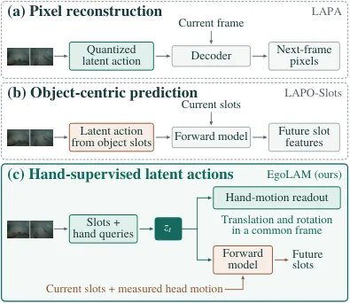
무슨 문제인가
latent action model은 연속한 두 frame 사이의 변화를 code 하나로 압축하고, policy는 이 code를 행동 정답 삼아 로봇 명령 없는 영상에서 배움. 머리에 단 카메라로 찍은 1인칭 영상에서는 컵이 화면에서 움직인 이유가 손이 밀어서일 수도, 착용자가 고개를 돌려서일 수도 있음. 다음 frame 픽셀을 복원하는 LAPA나 object slot을 예측하는 방법은 두 경우 모두 예측에 도움이 되므로 둘을 가르지 않음. 그래서 code에 머리 움직임이 섞이거나, 복원은 잘 되는데 손목의 이동과 회전은 빠질 수 있음.
어떻게 푸나
EgoLAM은 두 단계로 학습함. 첫 단계에서는 고정된 DINOv2 feature를 slot attention으로 묶어 frame마다 object slot 8개를 만들고, 이 front end를 고정함. 둘째 단계에서 inverse dynamics model(IDM: 두 frame을 보고 그 사이의 행동을 추정하는 모델)이 두 frame의 slot을 받음. 왼손·오른손 query가 손 주변 slot feature를 모으고, 두 frame 사이의 query 차이를 128차원 code로 바꿈. 이 code에서 두 손목의 이동과 회전을 앞 frame의 머리 좌표계 기준으로 읽어 내도록 측정값으로 직접 감독함. forward dynamics model(FDM: 현재 상태와 행동으로 다음 상태를 예측하는 모델)에는 측정된 머리 움직임을 따로 넣어, 고개 돌림에 따른 화면 변화는 code 없이 설명되게 함. 여기에 code에서 머리 움직임을 읽지 못하게 하는 adversarial loss와, 이미지를 2D로 비틀어도 code가 같게 유지되게 하는 loss를 더함. 추론 때는 RGB frame 두 장만 넣으면 code가 나옴.
결과
- 고정된 code에서 손목 움직임을 MLP로 얼마나 읽어 낼 수 있는지 잰 R2가 0.5343으로, 비교한 8개 모델 중 가장 높음. 다음은 GeoLAM 0.4312, LAOM 0.0564임. LAOM은 사람 행동 분류 정확도가 70.56%인데도 손목 정보는 거의 남기지 않음.
- 2D warp에 대한 code 변화량을 실제 움직임에 대한 변화량으로 나눈 값이 0.7673으로 8개 모델 중 유일하게 1보다 낮음. 2D warp 불변 loss를 빼면 이 값이 1.1276으로 오름.
- LIBERO(시뮬레이션 로봇팔 조작 benchmark) Spatial·Object·Goal suite에서 성공률이 81.40%, 77.33%, 79.40%임. suite마다 가장 강한 다른 latent action model보다 7.07, 11.47, 10.73퍼센트포인트 높음. suite당 과제 10개, seed 3개, 초기 상태 50개로 평가함.
- 손목 움직임 감독을 빼는 ablation에서 손목 R2가 0.5592에서 0.3502로 내림. 이 ablation의 기준 0.5592는 head 구성이 같은 짝 모델 값이라 첫 불릿의 0.5343과 다름.
한계
policy 실험은 LIBERO 시뮬레이션뿐이고 실로봇 실험은 없음. 학습할 때는 손 keypoint와 머리 자세 측정값이 있는 데이터(EgoVerse 등)가 필요함. 고개를 크게 돌린 장면에서 LAPA보다 손목 이동 오차가 작다는 결과는 저자 스스로 탐색적 분석이라고 밝힘. 회전 오차 차이는 신뢰구간이 0을 포함함.
누리랩 연구와의 연결
- 사람 1인칭 영상을 VLA 사전학습 데이터로 쓸 때 카메라 움직임을 행동과 분리하는 방법임. 영상 기반 VLA 사전학습이나 world model의 행동 조건을 설계할 때 비교 대상으로 쓸 수 있음.
- 손 query가 object slot을 모으는 구조는 object-centric 표현을 행동 추출에 쓴 사례로, slot 기반 manipulation 표현 연구와 이어짐.
9
72점
MomentMem: Memorizing Key Moments for Robot Manipulation
Manipulation
relevance 9/10
Robotics (cs.RO)
로봇이 잠깐 보였다 사라지는 시각 정보를 기억해야 하는 조작 과제에서, VLM이 고른 몇 장의 원본 이미지만 VLA에 넘기는 방식으로 성공률을 올림. 새로 만든 9개 과제 평균 성공률이 가장 강한 baseline의 18.2%에서 49.9%로 오름.
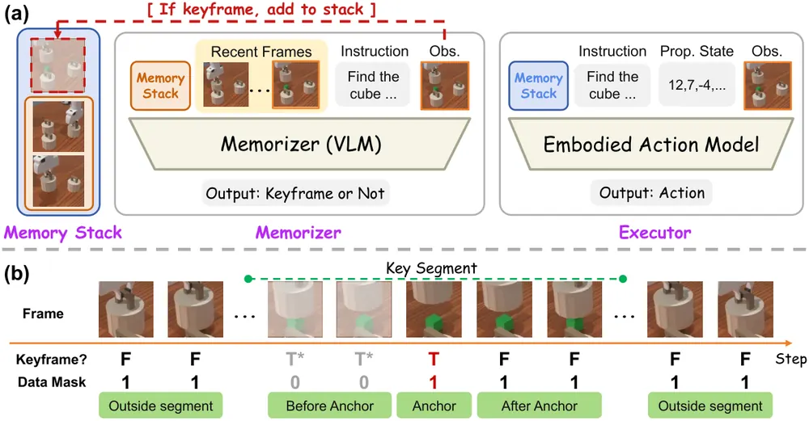
무슨 문제인가
물체의 원래 위치나 잠깐 드러난 무늬처럼 지금은 보이지 않는 정보를 기억해야 끝낼 수 있는 조작 과제가 많음. 대부분의 VLA는 현재 관측이나 짧은 context window만 입력으로 받아 이런 과제를 못함. 기존 memory 방법은 관측 기록 전체를 넣거나 압축 token으로 줄이는데, 기록이 길어지면 중복이 많고 압축 과정에서 시각 세부가 사라짐. 글로 요약하는 방법은 "큐브를 원래 자리로" 같은 지시에 필요한 정확한 위치나 질감 같은 세부를 담지 못함.
어떻게 푸나
MomentMem은 기억할 장면을 고르는 memorizer와 행동을 내는 executor를 따로 둔 계층 구조임. memorizer는 Qwen3-VL-4B를 fine-tuning한 VLM으로, 지금까지 저장한 keyframe, 최근 관측 몇 장, 지시문을 받아 현재 프레임을 저장할지 Yes/No로 출력함. executor는 π0.5에서 시작한 VLA로, 저장된 keyframe을 시간 순으로 받고 현재 관측, 로봇 상태, 지시문과 함께 action chunk를 출력함. memorizer 학습에서는 증거가 보이는 구간(key segment)을 통째로 정답 후보로 두고, epoch마다 그 구간에서 한 프레임(anchor)을 뽑아 양성으로 씀. anchor 앞의 프레임은 loss에서 빼고 anchor 뒤의 프레임은 음성으로 두어, 한 번 놓쳐도 같은 구간의 다음 프레임을 고르게 함. 또 scheduled sampling으로 자기 예측이 섞인 memory 기록에서도 학습시켜 앞선 선택 실수에 대응하게 함. executor는 학습을 마치고 고정한 memorizer가 실제로 고른 keyframe을 입력으로 받아 demonstration action을 따라 배움.
결과
- VMBench(저자가 만든 시뮬레이션 과제 9개 모음: 잠깐 보인 위치, 무늬, 위치와 색의 짝을 기억해야 하는 조작)에서 과제당 100회 평가함. 평균 성공률이 MomentMem 49.9%, EventVLA(행동 예측과 함께 keyframe을 고르는 기존 방법) 18.2%, memory 없는 π0.5 7.0%임. Mine Sweeper는 MomentMem 93% 대 baseline 최고 1%, Placement Imitation은 99% 대 baseline 최고 6%임.
- memorizer 학습 방식을 바꾼 ablation에서 평균 성공률이 크게 내림. 구간 대신 한 프레임만 정답으로 두면 6.9%, scheduled sampling을 빼면 19.0%임.
- 잠깐 나타난 표지 위치로 큐브를 옮기는 Flash Beacon 과제로 일반화를 시험함. 나머지 8개 과제로 학습한 memorizer를 Flash Beacon 주석 5개로 fine-tuning하면 성공률 43.7%임. 주석 100개를 다 쓴 경우는 44.3%, 사전학습 Qwen3-VL을 바로 주석 5개로 fine-tuning한 경우는 29.0%임.
- 실제 Franka Panda 로봇에서 과제 2개를 30회씩 평가함. 위치 따라 놓기는 14/30(π0.5 3/30, EventVLA 6/30), 컵 속 큐브 찾기는 17/30(π0.5 11/30, EventVLA 10/30)임.
한계
무늬를 비교해야 하는 Appearance 과제 3개에서는 baseline보다 낫지 않음. probe 분석에서 executor feature는 무늬 종류를 99% 맞히지만 짝이 맞는 상자는 40%만 맞혀, 기억한 이미지를 비교하는 능력이 부족함. 기존 benchmark인 RMBench에서는 EventVLA보다 평균 1.9퍼센트포인트 높은 데 그치고 과제별 차이가 큼. memorizer 학습에는 key segment 주석이 필요하고, 시뮬레이션은 로봇 한 종류와 고정 카메라만 써서 시점 변화는 검증하지 않음.
누리랩 연구와의 연결
- robot memory를 "무엇을 언제 저장할지"를 따로 학습하는 문제로 떼어 내고, keyframe 선택 정확도를 성공률과 별도로 잼. 실패가 기억 탓인지 실행 탓인지 가르는 방식이라 failure diagnosis 연구에 바로 가져다 쓸 수 있음.
- 좌표 memory와의 비교에서 위치만 필요하면 좌표가, 위치와 색의 짝이 필요하면 원본 이미지가 나았음. object-centric memory나 scene graph로 무엇을 저장할지 정할 때 비교 기준이 됨.
10
70점
Ego4Gen: Generating Geometry-Grounded Motion Tokens as a World-Action Interface
World Model
relevance 9/10
Robotics (cs.RO)
world model이 RGB 영상과 함께 3D 형상·3D 움직임 latent를 생성하게 하고, 이 latent를 바로 robot action으로 바꾸는 interface로 씀. action label 없는 영상으로 world model만 다시 학습하자, 시뮬레이션 randomized 장면 5개 과제의 평균 성공률이 15.2%에서 26.4%로 오름.
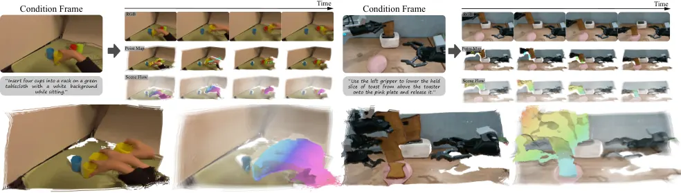
무슨 문제인가
video world model의 예측을 action으로 바꿀 때 RGB에는 색·질감·조명·배경처럼 제어와 무관한 정보가 섞여 있음. 그래서 공간 관계와 움직임이 같은 장면도 겉모습이 바뀌면 controller가 흔들림. 영상 변화를 압축한 latent action도 action과 무관한 시각 변화를 함께 담는다는 분석이 있음. 형상을 명시적으로 복원해 쓰는 방법은 계산이 늘고, world model 내부 feature를 쓰는 방법은 입력 분포 변화에 여전히 영향을 받음.
어떻게 푸나
저자는 먼저 MotionCrafter(영상에서 point map과 3D scene flow를 복원하는 4D VAE)의 latent가 action 예측용 interface로 쓸 만한지 확인함. 이어 Ego4Gen(Egocentric 4D Future Generation)을 만듦. 입력은 1인칭 이미지 한 장과 text prompt이고, 출력은 앞으로 4초 동안의 RGB 영상, point map(픽셀마다 3D 좌표), scene flow(점마다 3D 이동량)임. 사전학습된 video 생성 모델 Cosmos3-Nano를 고정하고, RGB·형상·움직임마다 따로 LoRA를 붙여 token의 종류에 따라 골라 씀. RGB token은 text와 RGB만 보고, 형상·움직임 token은 RGB를 gradient 없이 참고하게 attention을 비대칭으로 막아 RGB 생성 품질을 지킴. FlowInverse는 생성된 형상·움직임 latent와 로봇 관절 상태를 받아 관절 증분과 gripper 상태를 내는 작은 inverse dynamics network임. 실제 영상의 latent로 50개 과제를 사전학습한 뒤, 과제마다 Ego4Gen이 만든 latent로 fine-tuning함.
결과
- RoboTwin 2.0(양팔 로봇 시뮬레이션 조작 benchmark, Hard는 배경·물체를 무작위로 바꾼 장면)에서 전문가 영상의 latent를 그대로 넣어 interface만 비교함. Place Empty Cup Hard 성공률이 형상·움직임 latent는 51%, DreamDojo latent action은 0%, UniVLA는 0%, Wan2.2 video latent는 0%임. Easy에서는 DreamDojo가 88%로 형상·움직임 latent의 82%보다 높음.
- 같은 benchmark의 5개 과제 closed-loop 평가에서 clean 장면만으로 학습한 Ego4Gen의 Hard 평균 성공률은 15.2%임. π0는 21.4%, Fast-WAM은 0.2%, starVLA는 9.6%임. Easy 평균은 Ego4Gen 46.6%로 Fast-WAM 85.0%보다 낮음.
- FlowInverse를 고정한 채 clean·randomized 영상(action label 없음)으로 world model만 5k step 다시 학습함. Hard 평균 성공률이 15.2%에서 26.4%로 오르고, Easy 평균은 46.6%에서 37.2%로 내림.
- 학습에 쓰지 않은 TACO(1인칭 양손 조작 영상 dataset)에서 4초 예측의 depth AbsRel(깊이 상대 오차, 낮을수록 좋음)이 0.153으로 TesserAct 0.160, RynnWorld-4D 0.184보다 낮음.
한계
control 실험은 모두 RoboTwin 2.0 시뮬레이션이고 실로봇 결과는 없음. world model 재학습에 randomized 장면 영상을 썼고 비교 baseline은 clean 데이터만 썼으므로, Hard 비교에서 데이터 조건이 다름. Easy 성능은 강한 baseline보다 낮고, 재학습 뒤에는 더 내려감. 코드와 프로젝트 주소는 본문에서 확인 불가임.
누리랩 연구와의 연결
- world model 출력과 policy 사이에 무엇을 둘지라는 질문을 형상·움직임 latent로 답한 사례임. world model 기반 VLA나 test-time planning에서 RGB 대신 쓸 interface의 비교 대상이 됨.
- action label 없는 영상으로 world model만 고쳐 policy 일반화를 올린 결과는, 실패 장면 영상을 모아 world model을 보정하는 failure recovery 연구에 실험 설계로 쓸 수 있음.
11
70점
Latent Space Planning with Sequential Monte Carlo
World Model
relevance 8/10
ICLR 양식 (추정)
Robotics (cs.RO)
학습된 world model 위에서 action sequence를 찾는 planning을, 후보 여러 개를 확률적으로 옮기며 고르는 SMC(Sequential Monte Carlo)와 계획을 한 걸음씩 고치는 optimizer를 번갈아 돌리는 방식으로 바꿈. 시뮬레이션 12개 설정 평균 성공률 79.8%로 가장 강한 baseline MPPI보다 7.4퍼센트포인트 높음.
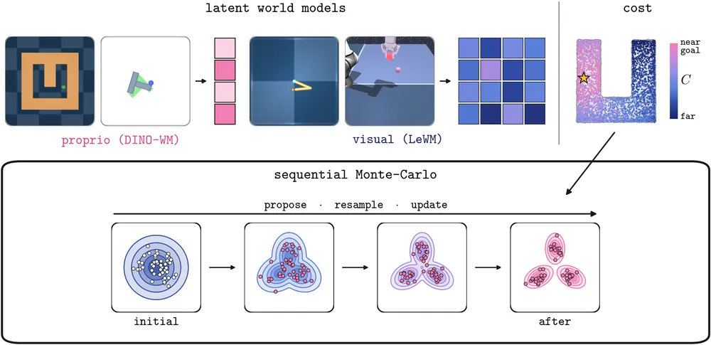
무슨 문제인가
world model로 planning할 때는 예측한 마지막 latent가 goal latent에 가까워지는 action sequence를 찾아야 함. CEM 같은 sampling 방식은 horizon이 길어지고 action 차원이 커지면 성능이 낮아짐. world model을 미분해 gradient로 고치는 방식은 local minimum에 걸림. MPPI는 매 반복 Gaussian에서 sample을 새로 뽑고 importance weight로만 목표 분포에 다가가므로, 앞 반복에서 찾은 좋은 후보를 이어 쓰지 못함.
어떻게 푸나
SMC(Sequential Monte Carlo: 가중치가 붙은 sample 집단을 바뀌는 목표 분포에 맞춰 옮기는 방법)로 action sequence 12개를 particle로 들고 다님. 각 particle은 horizon 전체의 action sequence 하나임. 목표 분포는 현재 계획을 중심으로 한 Gaussian에 cost가 낮을수록 큰 가중치를 곱한 것임. 매 반복에서 각 particle은 world model을 통과한 cost gradient로 Langevin 한 걸음을 움직이고, 가중치를 다시 매기며, 가중치가 소수 particle에 몰리면 resampling됨. 그다음 Adam이 가중 평균 쪽으로 계획을 한 걸음 옮기고, 이 계획이 다음 반복의 목표 분포 중심이 됨. cost에는 goal latent와의 L2 거리 외에 PDE cost-to-go를 더함. offline dataset의 latent를 꼭짓점으로, 실제로 관찰된 전이를 간선으로 하는 roadmap 그래프를 만들고 goal에서 heat equation을 한 번 풀어 각 latent가 goal에서 얼마나 먼지 순위로 매김.
결과
- 5개 환경(Reacher, Point maze, Wall, Push-T, Cube)을 horizon별로 나눈 12개 설정에서 같은 후보 12개, 반복 150회 조건으로 비교함. 평균 성공률이 79.8%로 gradient descent(GD)보다 28.8, 병렬 stochastic gradient planner인 GRASP보다 49.8, CEM보다 34.5, MPPI보다 7.4퍼센트포인트 높음. 가장 높은 설정은 12개 중 8개이고, 통계적으로 유의하게 앞선 것은 Reacher 3개와 Wall 1개임.
- 가장 강한 baseline MPPI와 seed 단위로 짝지어 보면, 이 방법만 푼 seed가 142개, MPPI만 푼 seed가 53개임. MPPI는 planning horizon H(world model 예측 step 수)가 Point maze H=15인 설정과 Wall H=10, H=15에서 1~6퍼센트포인트 앞섬.
- 같은 planner에서 cost만 바꾸면 Reacher H=15 성공률이 L2 cost 27%에서 PDE cost 89%로 오름. 반대로 Wall H=10, H=15에서는 L2 cost가 8, 7퍼센트포인트 높음(유의하지 않음).
- offline dataset으로 별도 network를 학습해 탐색을 돕는 planner와도 비교함. OGBench Cube(블록을 목표 위치로 옮기는 조작 과제) H=5 성공률이 88%로, LeFlow(sample 경로 64개) 62%와 GC-IDM 56%보다 높음.
한계
모든 실험이 시뮬레이션의 open-loop planning이고 실로봇 결과는 없음. wall-clock 시간과 memory는 비교하지 않았고, 이 방법은 GD처럼 world model을 거꾸로 미분해야 함. PDE cost는 offline dataset이 상태 공간을 얼마나 덮는지에 기대며, Push-T H=15처럼 긴 조작 과제에서는 모든 planner가 성공률 5% 이하임.
누리랩 연구와의 연결
- world model 위 test-time optimization 연구에서 CEM·MPPI 대신 써 볼 planner임. particle 집단과 ESS(effective sample size: 가중치가 몇 개 particle에 몰렸는지 재는 값)를 같이 얻으므로, 계획 단계의 불확실성을 failure detection 신호로 쓰는 실험으로 이어 볼 수 있음.
- Wall 실패 분석에서 latent goal 거리는 작은데 실제 위치 오차가 큰 경우가 나옴. world model latent와 실제 상태가 어긋나는 failure를 진단하는 사례로 참고할 수 있음.
12
70점
ReActWAM: Action-Consistent Caching for Efficient World-Action Models
VLA
relevance 8/10
Artificial Intelligence (cs.AI)
world-action model이 이전 chunk의 denoising 계산을 다시 쓸 때, 다음 행동의 방향과 gripper 명령이 바뀌는지 먼저 확인하고 재사용 상태를 보정하는 학습 없는 가속법을 제안함. LingBot-VA 기준 LIBERO-Long 추론이 5.44배 빨라지고 성공률은 96.6%에서 96.2%로 거의 유지됨.
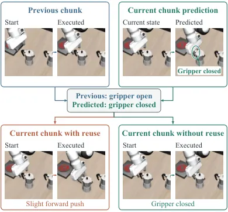
무슨 문제인가
world-action model(WAM: 미래 영상과 로봇 행동을 함께 생성하는 policy)은 매 제어 주기마다 diffusion이나 flow matching의 denoising을 여러 번 반복하므로 지연이 큼. 연속한 chunk는 비슷한 행동을 예측하므로, 이전 chunk의 중간 계산을 재사용해 앞쪽 denoising 단계를 건너뛰는 training-free 방법들이 나옴. 기존 방법은 현재 관측이 이전 관측과 비슷한지만 보고 재사용을 허락함. 장면이 거의 그대로여도 다음 행동은 gripper를 close로 바꾸거나 이동 방향을 뒤집어야 할 수 있음. 이때 이전 계산을 그대로 쓰면 물체를 잡지 못하고 미는 식으로 예전 행동이 이어짐.
어떻게 푸나
ReActWAM은 입력으로 현재 관측, 로봇 상태, 언어 지시를 받고, 고정된 WAM의 출력인 행동 chunk와 미래 영상을 더 적은 계산으로 만듦. 먼저 세 단계 gate로 이전 chunk 재사용 여부를 정함. 첫 gate는 최근 end-effector 이동 거리가 줄었는지 보고, 줄었으면 정밀 조작 구간으로 보고 재사용을 막음. 둘째 gate는 현재 관측과, 계산을 재사용할 이전 chunk의 관측(참조 관측)의 차이를 전체 화면과 변화가 큰 국소 영역에서 비교함. 셋째 gate는 참조와 같은 초기 noise로 network를 한 번 돌려 첫 velocity를 깨끗한 latent로 외삽하고, 이를 decoder에 넣어 대략의 다음 행동을 얻음. 이 예측이 참조 행동과 반대 방향으로 움직이거나 gripper 개폐가 다르면 재사용을 거부함. 통과하면 현재와 참조의 첫 단계 velocity 차이로 저장된 latent와 residual을 보정해 뒤쪽 denoising 단계부터 시작함. 남은 단계에서는 최근 두 velocity의 cosine similarity가 높을수록 같은 velocity를 더 여러 단계 재사용함.
결과
- RoboTwin 2.0(양팔 조작 과제 50개 시뮬레이션 benchmark)에서 LingBot-VA의 chunk당 지연이 2424.65ms에서 496.34ms로 줄어 4.885배 빨라짐. 성공률은 86.30%에서 86.35%로 유지됨. chunk 안 재사용만 하는 DiT Caching은 4.440배, 85.60%임.
- LIBERO-Long(긴 순서의 시뮬레이션 조작 과제 10개)에서 LingBot-VA ablation 결과, 재사용 상태 보정을 빼면 성공률이 96.2%에서 79.4%로 내림. 전체 방법은 5.44배 빨라짐. gate 셋을 모두 빼면 6.643배로 더 빨라지지만 성공률은 89.2%로 내림.
- FastWAM처럼 미래 영상을 만들지 않는 backbone에서는 가속이 LIBERO-Long 1.413배에 그침. 궤적과 중간 상태를 관측에 맞춰 재사용하는 기존 가속법 WAMachine(1.635배)보다 느림.
- 실제 Franka Research 3 로봇의 과제 3개(꽃 꽂기, 책 꽂기, 물 주기)에서 과제당 20회 시행함. 평균 수행 시간이 244.8초에서 167.9초로 줄어 1.458배 빨라졌고 평균 성공률은 50.0%로 가속하지 않은 원래 추론(Native)과 같음.
한계
gate 임계값, 보정 크기, 재사용 간격 같은 설정값이 많고, 설정값에 대한 민감도 분석은 본문에서 확인 불가함. 가속 폭은 계산 대부분이 denoising에 몰린 backbone에서만 크고, encoding 비중이 큰 FastWAM에서는 작음. 실로봇 실험은 과제 3개이고 base policy 성공률 자체가 50%라 성공률 유지 주장의 근거가 약하며, 코드 공개 주소는 본문에 없음.
누리랩 연구와의 연결
- 한 번의 forward pass로 다음 행동의 방향과 gripper 변화를 미리 읽는 action-intent 예측은, VLA 실행 중 행동 전환 시점을 싸게 감지하는 failure detection 신호로 바꿔 쓸 수 있음.
- world model 기반 test-time planning에서 rollout 비용을 줄일 때, 관측 유사도 대신 행동 일관성으로 재사용을 정하는 기준을 그대로 옮겨 볼 수 있음.
13
68점
Learning from Incomplete Actions: Interval Motion Supervision for Vision-Language-Action Policies
VLA
relevance 9/10
Robotics (cs.RO)
사람 egocentric 영상에서 뽑은 action label에 빈 구간이 생겨도, 구간 양 끝 pose가 알려 주는 순이동량으로 빠진 action들의 합을 제약해 VLA를 학습함. 실로봇 5개 과제 평균 성공률이 빈 구간을 학습에서 빼는 방식(Mask)의 48.8%에서 59.6%로 오름.
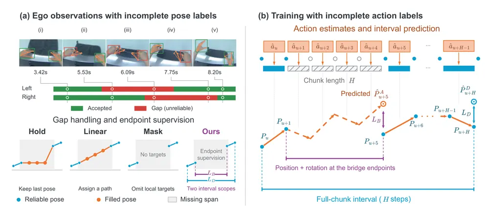
무슨 문제인가
사람 egocentric demonstration은 영상에서 손 pose를 추정해 robot action label로 바꿔 씀. 손이 가려지거나 tracking이 실패하면 연속된 구간의 label을 믿을 수 없어 걸러 내야 함. 기존 처리는 마지막 pose를 유지하는 Hold, 양 끝 사이를 직선으로 잇는 Linear, 해당 구간의 loss를 빼는 Mask임. Hold는 정지 뒤 급한 점프를, Linear는 실제와 다를 수 있는 내부 경로를 target으로 주고, Mask는 양 끝 pose가 알려 주는 순이동량까지 버림.
어떻게 푸나
π0.5를 초기값으로 쓰는 flow matching(FM) policy가 10-step action chunk를 내는 구조는 그대로 둠. 믿을 만한 action은 원래 FM loss로 학습함. 같은 action expert에 interval token을 더해, 구간 시작 관측에서 그 구간의 6차원 순이동량(이동 3, 회전 3)을 FM으로 예측하게 함(interval branch). 빈 구간 안의 action 추정값은 시간 순서대로 합성해 순이동량으로 만들고, 이 값이 interval branch 예측과 맞도록 composition loss를 줌. 이때 예측값은 stop-gradient로 고정해 target으로만 씀. 그래서 빠진 action 하나하나에는 target이 없고 합만 제약받음. 빈 구간이 10 step보다 길면 구간을 덮는 여러 window가 각자 관측을 읽은 채 하나의 제약을 함께 받음. 추론 때는 현재 관측만 넣고 action과 interval을 함께 10번의 Euler step으로 denoising함.
결과
- LIBERO(시뮬레이션 단일 팔 조작 benchmark) 40개 과제의 시연 20%(339개)에서 action의 70.5%를 1.2초짜리 구간으로 지운 조건임. 세 번 학습한 평균 성공률이 87.9%임. 한 번 학습 기준으로 Mask는 76.4%, label이 다 있는 Clean은 92.4%임.
- 같은 조건에서 관측을 읽는 횟수와 학습 비용(약 279 GPU-hours)을 맞춘 Mask 대조군은 77.9%이고 이 방법은 88.4%임. 두 모델 모두 한 번씩 학습한 비교임.
- RoboTwin 2.0(양팔 조작 시뮬레이션) 10개 과제에 실제 Ego 데이터의 빈 구간 패턴을 옮겨 학습함. 성공률은 45.4%로 Mask 40.3%, interval branch만 쓴 경우 42.8%보다 높고 Clean 49.5%보다는 낮음.
- 실제 양팔 로봇 5개 과제에서 과제당 로봇 시연 20개와 Ego 시연 160개로 학습하고 50회씩 평가함. 평균 성공률은 59.6%로 interval branch만 쓴 경우 54.8%, Mask 48.8%, 로봇 시연만 쓴 경우 42.0%보다 높음.
한계
LIBERO 표 대부분과 실로봇 결과가 설정당 한 번 학습한 값이라 수 퍼센트포인트 차이는 분산과 구분하기 어려움. interval branch의 이득은 빈 구간 action 자리에 넣는 입력에 따라 달라짐. 양 끝 사이 직선 보간값을 넣는 주 설정에서는 interval branch를 빼도 성공률이 0.3퍼센트포인트만 내림. 방법은 구간 양 끝 pose가 정확하다는 가정에 기대며, 코드 공개 주소는 본문에서 확인 불가임.
누리랩 연구와의 연결
- 사람 영상을 VLA 학습 데이터로 쓸 때 생기는 label 결손을 버리지 않고 구간 단위 제약으로 쓰는 방법임. 누리랩 VLA·manipulation 연구에서 human video co-training을 할 때 Mask 대신 비교해 볼 수 있음.
- 개별 action 대신 여러 step의 합성 결과를 감독하는 구조는, 짧은 구간의 결과 상태만 아는 failure recovery 데이터를 학습에 쓸 때도 응용 가능함.
14
68점
NavTTT: Adaptive Parametric Memory via Hierarchical Test-Time Training for Vision-and-Language Navigation
Navigation
relevance 8/10
Robotics (cs.RO)
언어 지시 navigation에서 지나간 관측을 token으로 쌓지 않고, 고른 일부만 test-time training으로 fast weight에 써 넣어 기억하게 함. R2R-CE 성공률이 비교 대상 중 가장 높던 JanusVLN의 60.5%에서 66.7%로 오름.
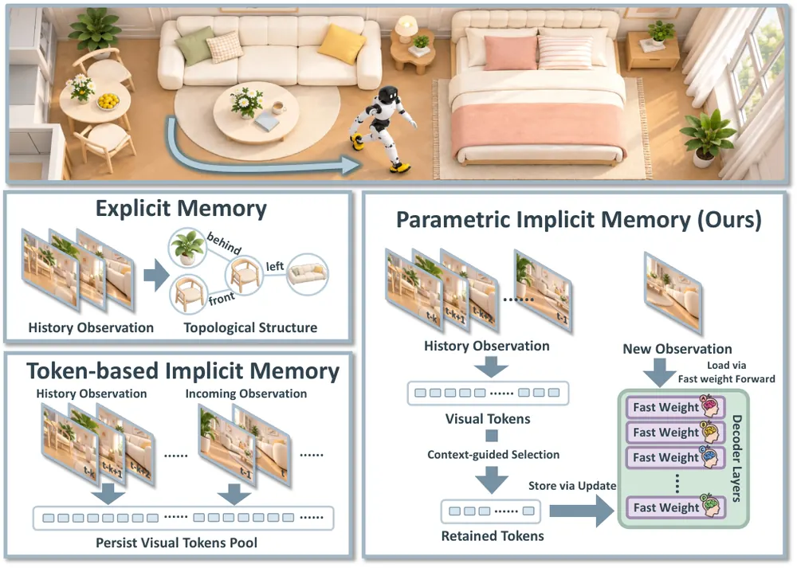
무슨 문제인가
VLN(vision-and-language navigation)에서 agent는 지시를 따라 걸으며 지나온 장소와 landmark를 기억해야 다음 행동을 정할 수 있음. 기존 방법은 지도·graph 같은 explicit memory나 지난 관측을 token으로 들고 다니는 implicit memory를 씀. token 방식은 기억을 늘릴수록 붙잡고 attention할 token이 늘어나서, 긴 경로에서는 기억 범위와 계산량 사이에서 타협해야 함. 관측이 들어올 때마다 작은 신경망 가중치(fast weight)를 갱신해 기억하는 test-time training(TTT)이 대안이지만, 비슷한 장면이 반복되는 navigation 영상을 다 써 넣으면 중요한 landmark가 묻힘.
어떻게 푸나
NavTTT(Navigation-Conditioned Test-Time Training)는 Qwen3-VL-8B를 바탕으로 한 VLN 모델에 episode마다 새로 시작하는 fast weight 기억을 붙임. 이 기억을 APM(Adaptive Parametric Memory)이라 부름. 매 결정마다 먼저 현재 RGB 이미지의 visual token 가운데 써 넣을 것을 고름. 지시·자세·step을 담은 navigation state와 decoder의 결정 token을 합쳐 각 token의 관련도를 매기고, 이미 고른 token과 겉모습이 비슷하면 감점하며 하나씩 고름. 고른 token은 시각 특징을 key로, 시각 특징·patch 좌표·로봇 자세·navigation state를 합친 것을 value로 만들어 fast weight에 gradient 한 번으로 써 넣음. fast weight는 36층 decoder 중 6개 층에 따로 두고, 각 층의 hidden state가 query로 기억을 읽어 self-attention 출력에 더함. 기억은 읽기 먼저, 쓰기 나중 순서로 다뤄서 현재 행동은 이전 결정까지의 기억만 보고 정함. 출력은 FORWARD·LEFT·RIGHT·STOP 중 최대 4개로 된 행동 묶음임.
결과
- R2R-CE(연속 3D 실내 환경에서 영어 지시를 따라 걷는 benchmark)의 처음 보는 환경 split에서 성공률 66.7%, SPL(경로 효율을 반영한 성공률) 59.4%를 얻음. 가장 강한 비교 대상 JanusVLN은 60.5%와 56.8%임.
- 더 길고 자세한 다국어 지시를 쓰는 RxR-CE에서 성공률이 JanusVLN의 56.2%에서 63.6%로, 기준 경로와의 일치도 nDTW가 62.1%에서 71.0%로 오름.
- 같은 checkpoint에서 기억 쓰기만 끄면 R2R-CE 성공률이 66.7%에서 63.3%로 내림. 경로 길이 상위 3분의 1 구간에서는 쓰기를 켜면 성공률이 9.97퍼센트포인트 오름.
- 실제 휴머노이드 로봇에서 실환경 데이터로 fine-tuning하지 않고 40회 시도 중 11회 성공함(27.5%). 비교 대상 없는 단독 결과임.
한계
NavTTT는 RGB에 더해 odometry 자세를 입력으로 쓰지만, JanusVLN과 StreamVLN은 RGB만 써서 입력 조건이 같지 않음. 기존 TTT 방식(LaCT)을 그대로 붙인 경우의 R2R-CE 성공률은 63.3%로, NavTTT보다 3.4퍼센트포인트 낮을 뿐이고, RxR-CE에서는 SPL이 오히려 1.0퍼센트포인트 낮음. 쓴 내용을 다시 꺼내는 시험에서 정답 1위 적중률이 6.22%에 그쳐, 기억에서 무엇을 다시 꺼낼 수 있는지는 분명하지 않음.
누리랩 연구와의 연결
- robot memory를 token이나 지도가 아니라 실행 중 갱신되는 가중치에 두는 설계이고, 무엇을 쓸지 고르는 기준을 학습함. manipulation VLA의 긴 과제 기억이나 test-time optimization 연구에서 비교 대상으로 쓸 수 있음.
- 엉뚱한 경로의 기억 상태를 넣었을 때 정답 행동 likelihood가 낮아지는지 재는 진단 방식은, 기억이 실제로 행동에 쓰이는지 확인하는 실험 설계로 가져올 만함.
15
66점
FoRe: A Force-Guided Framework for Autonomous Grasp Recovery in Vision-Language-Action Models
VLA
relevance 9/10
Robotics (cs.RO)
VLA policy가 잡기에 실패하고도 그대로 운반을 이어 가는 문제를, 힘 센서 값으로 실패를 감지해 다시 잡기 전용 policy로 바꾸는 방식으로 줄임. 실로봇 흡착 pick-and-place에서 VLA-Adapter의 평균 성공률이 26.7%에서 51.7%로 오름.
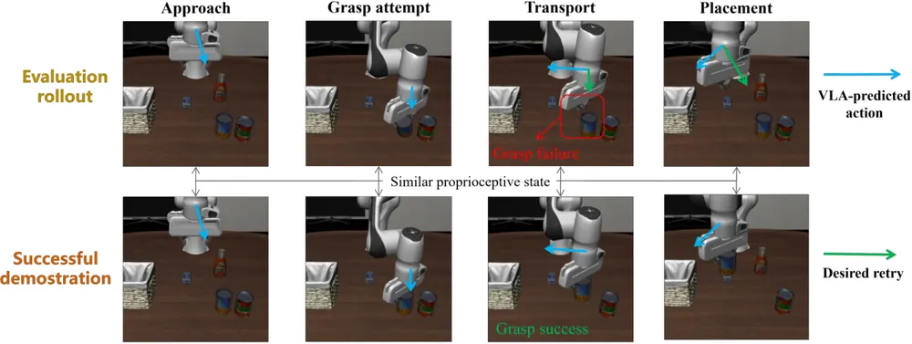
무슨 문제인가
imitation learning으로 학습한 VLA policy는 pick-and-place에서 물체를 놓친 뒤에도 다시 잡지 않고 운반 동작을 계속하는 경우가 있음. 저자들은 원인을 두 가지로 봄. 성공 demonstration에서는 로봇 관절 상태(proprioception)만 보아도 과제 진행 단계를 알 수 있음. 그래서 policy가 실제 잡기 결과 대신 관절 상태만 보고 운반 단계로 넘어감. 또 끊김 없는 성공 demonstration만으로는 실패 뒤 다시 접근하는 행동을 배울 데이터가 없음. 기존 복구 방법은 사람의 언어 교정이나 VLM 감시에 기대거나 demonstration을 늘리는 방식이라, 사람 참여나 추론 지연이 따름.
어떻게 푸나
FoRe(Force-guided Recovery)는 같은 VLA backbone으로 policy 세 개를 만들고 힘 신호로 전환함. 먼저 demonstration의 각 시점에 단계 표시를 붙임. 잡기 명령이 켜져 있고 힘 크기가 임계값을 넘으면 접근·잡기 단계에서 운반·놓기 단계로 넘어가고, 놓기 명령이 들어오고 힘이 사라지면 다시 첫 단계로 돌아감. 두 구간의 demonstration으로 접근·잡기 policy M1과 운반·놓기 policy M2를 따로 fine-tuning함. 다시 잡기 policy M3는 M1에서 시작해 RL로 다듬음. 이때 운반 초반의 로봇 자세에 로봇을 두고 물체는 원래 자리에 둔 장면을 실패 직후 상태로 씀. 같은 장면에서 여러 번 시도해 들어 올리기 시험의 성공 여부를 0/1 reward로 주고, 묶음 평균과의 차이를 advantage로 써서 갱신함. 추론 때는 M2 실행 중 잡기 명령이 켜져 있는데 힘이 임계값 아래로 내려가면 실패로 보고 M3로 바꾸며, 힘이 다시 잡히면 M2로 돌아감.
결과
- LIBERO-SUCTION(저자들이 LIBERO에 흡착 그리퍼와 힘 센서를 붙여 만든 22개 과제 benchmark)에서 과제당 50회 평가함. 평균 성공률이 VLA-Adapter는 69.2%에서 87.6%로, π0.5는 85.9%에서 92.4%로 오름.
- 원래 LIBERO(시뮬레이션 조작 과제 모음, 여기서는 suite 4개 40개 과제)에서 VLM으로 하위 과제를 되돌려 다시 시도하는 CycleVLA와 비교함. 평균 성공률이 VLA-Adapter 기준 FoRe 98.6%, CycleVLA 97.6%이고, π0.5 기준 FoRe 98.3%, CycleVLA 97.9%로 차이는 1퍼센트포인트 이하임.
- ablation에서 힘 신호를 빼고 잡기 명령만으로 전환하면 M3가 호출되지 않고 평균 성공률이 87.6%에서 74.3%로 내림. RL 없이 M1을 그대로 다시 잡기에 쓰면 82.4%임.
- 실제 DOBOT 6축 로봇과 진공 흡착 그리퍼로 과제 범주 3개(단순, 방해물, 여러 물체 쌓기)를 과제당 40회 평가함. 평균 성공률이 VLA-Adapter는 26.7%에서 51.7%로, π0.5는 48.3%에서 70.0%로 오름.
한계
복구 대상은 잡았다가 놓친 경우뿐이고, 처음부터 물체에 닿지 못하면 힘 신호가 없어 실패를 감지하지 못함. 힘 임계값은 데이터셋마다 사람이 통계를 보고 정함. 실로봇 결과는 과제 범주 3개로만 보고되어, 범주별 과제 수와 과제별 수치는 본문에서 확인 불가하고, 코드 공개 주소도 본문에 없음.
누리랩 연구와의 연결
- failure detection/recovery에서 VLM 대신 힘 신호와 그리퍼 명령만으로 실패를 감지하는 단순한 기준선임. 실패 직후 상태를 demonstration 자세로 만들어 RL을 돌리는 방식은 recovery policy 데이터 생성에 바로 쓸 수 있음.
- proprioception만 보고 단계를 넘기는 문제를 제기했으므로, VLA의 단계 판단을 물리 결과에 묶는 counterfactual 연구의 비교 대상이 됨.
오늘의 흐름
- world model 위 planning의 신뢰성: planner가 world model의 학습 분포 밖 행동을 고르면 예측은 목표에 닿지만 실제 실행은 실패함. 오늘은 이 문제를 예측 상태에서 행동을 다시 읽는 검사, 학습 분포 안에서만 후보를 뽑는 latent skill, 여러 후보를 확률적으로 옮기는 SMC(Sequential Monte Carlo) 세 방향으로 다룸. A Plan or an Adversarial Example?, Skill-JEPA, Latent Space Planning with Sequential Monte Carlo
- test-time training을 memory로 씀: 지난 관측을 token으로 계속 쌓는 대신, 실행 중에 adapter나 fast weight를 갱신해 그 가중치에 기억을 남김. 조작에서는 짧은 history로 긴 history 모델 성능에 맞추고, navigation에서는 기존 최고 방법보다 성공률을 올림. LoCo-WAM, NavTTT
- 실행 중 실패 감지와 복구: 기존 policy를 다시 학습하지 않고 그 위에 감지 장치를 붙이는 방식이 셋 나옴. flow matching policy의 epistemic uncertainty 계산, agent가 직접 쓰는 감시 프로그램, 힘 신호로 잡기 실패를 알아채는 방식임. Coherent Moment Propagation, Tripwire, FoRe
- world-action model 다듬기: 영상과 행동을 함께 예측하는 world-action model과, world model 안에서 VLA를 개선하는 방법의 약점을 하나씩 고치는 연구가 모임. 지시 대상 grounding, 추론 속도, RGB와 함께 생성한 3D 형상 latent를 쓰는 action interface, latent 공간 RL이 각각 다뤄짐. Beyond Linear Decodability, ReActWAM, Ego4Gen, Efficient VLA Reinforcement Learning via Subchunk Rollouts
- 사람 1인칭 영상으로 VLA 학습: 정확한 로봇 action label이 없는 사람 1인칭 영상에서 행동 신호를 뽑아 VLA를 학습함. 하나는 머리 움직임과 손목 움직임을 나누고, 다른 하나는 label이 빈 구간을 양 끝 pose의 순이동량으로 제약함. EgoLAM, Learning from Incomplete Actions
해볼 만한 연구
world model 예측 오차를 VLA 실패 예측 신호로 쓰기
- 질문: world model이 실행 중에 내는 예측 오차가 policy 자체의 uncertainty보다 실패를 더 일찍, 더 정확히 알려 주는지 밝힘.
- 첫 실험: LIBERO-90에서 같은 VLA를 돌리며 세 신호의 실패 예측 정확도를 비교함. 첫째 신호는 CoMP(Coherent Moment Propagation: flow matching policy의 epistemic uncertainty 계산법) uncertainty임. 나머지 둘은 LoCo-WAM식 video 예측 loss와 예측 상태에서 행동을 다시 읽은 residual임.
- 가장 가까운 연구: Coherent Moment Propagation은 policy 가중치의 불확실성만 봄. A Plan or an Adversarial Example?는 residual을 plan 선택에만 쓰고 실패 판별기로 평가하지 않았음.
원본 이미지 memory와 가중치 memory 비교
- 질문: 조작 과제에서 기억을 원본 이미지 몇 장으로 남기는 방식과 adapter 가중치에 써 넣는 방식이 어떤 과제에서 각각 나은지 밝힘.
- 첫 실험: MomentMem이 새로 만든 9개 기억 과제(잠깐 보였다 사라지는 시각 정보를 기억해야 하는 조작 과제)에서 같은 VLA에 두 memory를 붙여 성공률과 추론 계산량을 비교함. 하나는 VLM이 고른 key frame, 다른 하나는 test-time training으로 갱신하는 LoRA임.
- 가장 가까운 연구: MomentMem은 이미지 선택만 시험함. LoCo-WAM은 짧은 history를 보완하는 효과만 보였고, 잠깐 보였다 사라지는 정보를 기억하는 과제는 다루지 않음.
agent가 쓰는 감시 프로그램에 uncertainty 넣기
- 질문: agent가 상황마다 새로 쓰는 감시 조건에 policy uncertainty를 입력으로 주면, 사람 방해뿐 아니라 조작 실패도 잡을 수 있는지 밝힘.
- 첫 실험: Tripwire 논문의 실행 환경(TRIP harness)에서 tripwire가 읽을 수 있는 값에 CoMP uncertainty를 더하고, 잡기 실패가 섞인 주방 과제에서 복구 성공률을 비교함.
- 가장 가까운 연구: Tripwire는 VLM 질문과 depth로 사람 접근만 감시함. FoRe는 힘 신호라는 고정된 감지 규칙 하나만 씀.
꼭 읽을 논문
- Beyond Linear Decodability: 지시를 무시하는 실패를 내부 표현에서 진단하고, 지시 대상을 선형으로 읽게 하는 보조 loss로 고치는 절차를 보여 줌. 추가 데이터에는 action 없이 대상 mask만 씀.
- A Plan or an Adversarial Example?: 탐색을 더 할수록 실행 성공률이 내려가는 현상을 재는 방법을 줌. world model planning 실험을 설계할 때 먼저 확인할 지표임.
- LoCo-WAM: 실행 중 test-time training으로 짧은 history 모델이 긴 history 모델 성능에 맞춤. test-time optimization과 robot memory 연구의 비교 대상임.
- Coherent Moment Propagation: 기존 uncertainty 계산이 ODE 적분 step을 늘릴수록 0으로 줄어듦을 증명함. 실패 감지 실험에서 점수를 비교할 때 확인할 항목을 알려 줌.
- Tripwire: 학습 없이 agent가 감시 프로그램을 써서 VLA를 멈추고 복구 행동을 고르는 구조임.